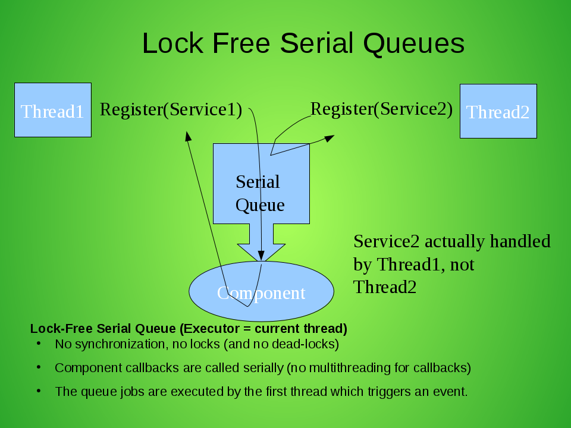
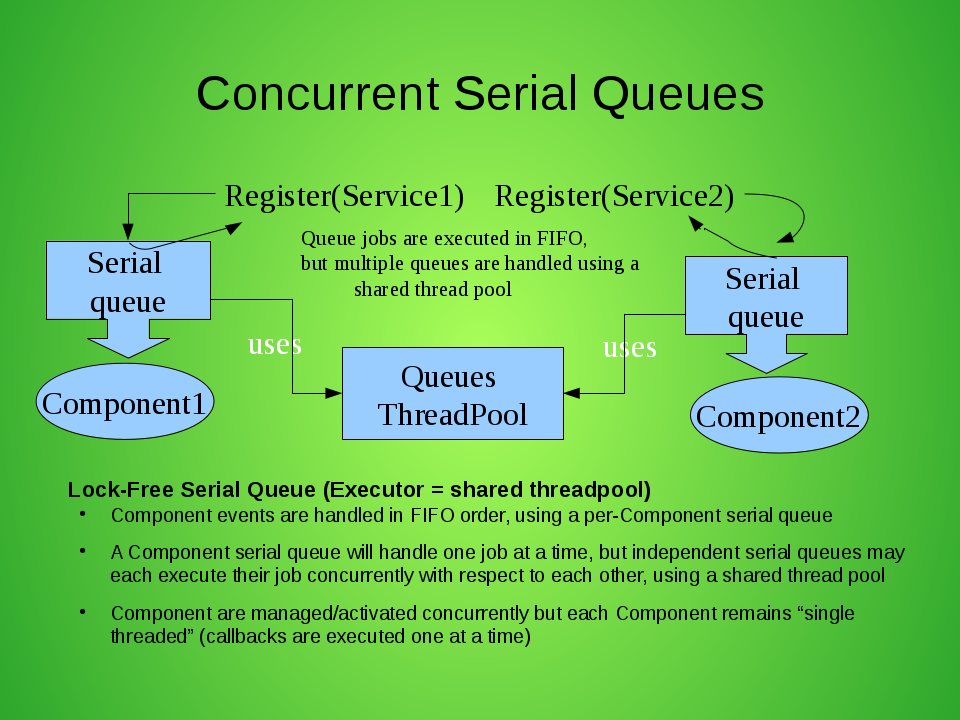

Dependency Manager - Thread Model
This section gives a brief overview of the default thread model used by Dependency Manager, and also explains how to start and handle components concurrently.
Default thread model
By default, Dependency Manager uses a lock-free/single thread model:
- When an external event that influence the state of a Component is taking place (for example, when a service dependency on which the Component is depending on is registered in the registry by a given thread), then DependencyManager does not perform any locking for the handling of the event. Instead of that, a job that will handle the event is inserted in an internal lock-free Serial Queue which is internally maintained in each Component.
- All jobs scheduled in the Serial Queue are then executed in FIFO order, by the first thread which has triggered the first event. This avoid to use some blocking locks in DM internals, and also it simplifies the development of DM components, because all lifecycle callbacks (init/start/stop/destroy) and dependency injections are scheduled through the Serial Queue: This means that your component is not concurrently called in lifecycle callbacks and in dependency injection methods.
- Now let's describe which thread is executing the jobs scheduled in a Component Serial Queue: When a job (J1) is scheduled in the queue while it is empty, then the current thread becomes the "master" and will immediately execute the Serial Queue tasks (synchronously). And if another thread triggers another event concurrently while the "master" thread is executing the job J1, then a job (J2) for this new event is just enqueued in the Serial Queue, but the other thread returns immediately to the caller, and the job J2 will then be executed by the "master" thread (after J1).
This mechanism allows to serially handle all Component events (service dependencies) in FIFO order without maintaining any locks.
The following diagram illustrates the thread model we just described:

Enabling parallelism with a ComponentExecutorFactory
As described above, all the external events that influence the state of a given component are handed by jobs scheduled in the Serial Queue of the Component, and the jobs are getting executed serially by a single "master" thread. So usually, bundles are started from a single thread, meaning that all Components are then activated synchronously.
But when you register in the OSGi service registry a ComponentExecutorFactory, that factory will be used by DependencyManager to create an Executor of your choice for each Component, typically a shared threadpool configured by yourself. And all the Component Serial Queues will be executed using the Executor returned by the getExecutorFor(Component) method. However, jobs scheduled in the Serial Queue of a given Component are still executed one at a time, in FIFO order and the Component remains single threaded, and independent Components may then each be managed and activated concurrently with respect to each other.
Here is a diagram which illustrates all this:

If you want to ensure that all Components are initialized after the ComponentExecutorFactory is registered in the OSGI registry, you can use the "org.apache.felix.dependencymanager.parallel" OSGi system property which specifies the list of components which must wait for the ComponentExecutorFactory service. This property value can be set to a wildcard ("*"), or a list of components implementation class prefixes (comma separated). So, all components whose class name starts with the specified prefixes will be cached until the ComponentExecutorFactory service is registered (In this way, it is not necessary to use the StartLevel service if you want to ensure that all components are started concurrently).
Some class name prefixes can also be negated (using "!"), in order to exclude some components from the list of components using the ComponentExecutorFactory service.
Notice that if the ComponentExecutorFactory itself and all its dependent services are defined using the Dependency Manager API, then you have to list the package of such components with a "!" prefix, in order to indicate that those components must not wait for a ComponentExecutorFactory service (since they are part of the ComponentExecutorFactory implementation !).
Examples usage of the org.apache.felix.dependencymanager.parallel property:
org.apache.felix.dependencymanager.parallel=* -> means all components must be cached until a ComponentExecutorFactory comes up. org.apache.felix.dependencymanager.parallel=foo.bar, foo.zoo -> means only components whose implementation class names are starting with "foo.bar" or "foo.zoo" must be handled using an Executor returned by the ComponentExecutorFactory service. Other Components will be handled normally, as when there is no ComponentExecutorFactory available. org.apache.felix.dependencymanager.parallel=!foo.threadpool, * -> means all components must be delayed until the ComponentExecutorFactory comes up, except the components whose implementations class names are starting with "foo.threadpool" prefix).
Examples of a ComponentExecutorFactory that provides a shared threadpool:
First, we define the OSGi bundle context system property to enable parallelism for all DM Components excepts the one which declares the ComponentExecutorFactory:
org.apache.felix.dependencymanager.parallel=!com.acme.management.threadpool, *
Next, here is the Activator which declares the ComponentExecutorFactory:
package com.acme.management.threadpool; import org.apache.felix.dm.*; public class Activator extends DependencyActivatorBase { public void init(BundleContext context, DependencyManager mgr) throws Exception { mgr.add(createComponent() .setInterface(ComponentExecutorFactory.class.getName(), null) .setImplementation(ComponentExecutorFactoryImpl.class) .add(createConfigurationDependency() .setPid("com.acme.management.threadpool.ComponentExecutorFactoryImpl"))); } }
And here is the implementation for our ComponentExecutorFactory:
package com.acme.management.threadpool; import org.apache.felix.dm.ComponentExecutorFactory; public class ComponentExecutorFactoryImpl implements ComponentExecutorFactory { volatile Executor sharedThreadPool; void updated(Dictionary conf) { int size = Integer.parseInt((String) conf.get("threadpool.size")); sharedThreadPool = Executors.newFixedThreadPool(size); } @Override public Executor getExecutorFor(Component component) { return sharedThreadPool; // Use a shared threadpool for all Components } }
You will find a live example in the source distribution sample codes:
- see the bnd.bnd which configures the org.apache.felix.dependencymanager.parallel in the -runproperties option.
- see the executor factory sample code and README file to up-to-date informations.